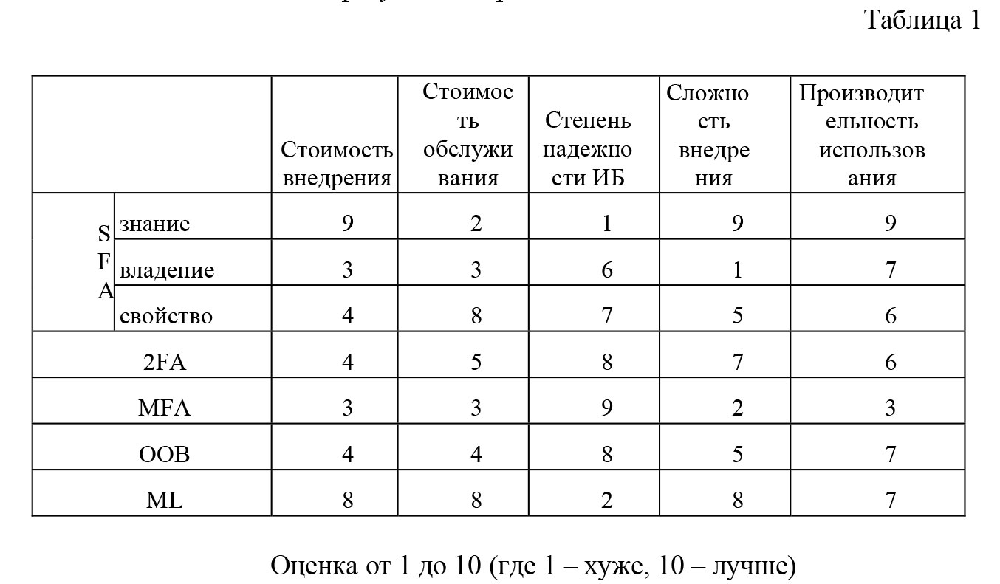

Анализ методов цифровой аутентификации
Conference: ITSec 2020
Conference URL: ITSec-2020
Article URLS: https://itsec-conf.org/ua/handle/17.itsec/article.2020efc
УДК 004.056.53
Юрий Журов
Национальный авиационный университет
iurii.zhurov@gmail.com
В течение первых двух десятилетий XXI века количество информационных систем (ИС) увеличилось на несколько порядков, также увеличилось количество субъектов ИС, а также плотность использования ИС одним субъектом. Особо стоит отметить возросшее количество взаимодействий объектов ИС. Данный тренд имеет резко положительную динамику и, так как, каждое взаимодействие субъектов/объектов ИС должно быть аутентифицировано, удерживается постоянный высокий запрос на: 1) эффективные экономически; 2) имеющие высокую степень надежности с точки зрения информационной безопасности; 3) эффективные с точки зрения внедрения; 4) производительные – методы или системы цифровой аутентификации.
Цель данной работы заключается в анализе существующих методов цифровой аутентификации для определения возможных направлений развития научного и практического поиска.
Рассмотрим классические методы аутентификации – методы, основанные на использовании, так называемых, факторов аутентификации. Выделяют следующие факторы – 1) знания; 2) владения; 3) свойства. Эмпирически все доступные варианты верификации аутентифицируемого субъекта/объекта можно отнести к одной из этих категорий, поэтому текущие методы базируются либо на использование этих факторов, либо на мультипликации факторов или вариативности их использования. Такими методами являются 1) однофакторная аутентификация (SFA); 2) двухфакторная аутентификация (2FA); 3) многофакторная аутентификация (MFA).
В 2005 году Shintaro Mizuno, Kohji Yamada, Kenji Takahashi на конференции Proceedings of the 2005 Workshop on Digital Identity Management в докладе «Authentication using multiple communication channels» предложили метод аутентификации c использованием нескольких коммуникационных каналов (MCA), однако общее состояние развития ИС и коммуникационных каналов на 2005 год не позволило выделить данный метод в отдельный подход цифровой аутентификации и MCA принято рассматривать как фактор владения. MCA - интересен с точки зрения повышения степени надежности информационной безопасности. На данный момент метод представлен в виде использования вторичного канала связи для проведения цифровой аутентификации одним из выше перечисленных классических методов аутентификации. Такой подход называется внеполосным (Out-Of-Band).
Также стоит отметить частный вариант фактора владения – так называемые «magic links» (ML) - аутентификация субъекта/объекта ИС при помощи верификации доступности ему заранее указанного некоего объекта владения.
После анализа различных систем, используемых в ИС для цифровой аутентификации субъектов/объектов ИС, были выделены некоторые критерии и свойства этих систем – результаты представлены в таблице 1.

Ввиду того, что критерии не являются взаимозаменяемыми, данный анализ не позволяет сделать выбор наилучшего метода или дать абсолютную оценку той или иной системы цифровой аутентификации, используемой в ИС, однако приведенная таблица позволяет сделать предположение о существующих запросах к системам, использующим методы цифровой аутентификации.
По итогам проведенного анализа можно сделать следующие выводы: 1)наиболее эффективными являются методы, использующие комбинацию факторов, наиболее экономически выгодными являются методы не использующие внешнее программное обеспечение или оборудование, существует высокая потребность в методах имеющих высокую производительность и высокую степень надежности; 2) недостаточность вариантов комбинирования факторов аутентификации не позволяет существующим методам значительно улучшить экономическую эффективность, повысить степень надежности с точки зрения информационной безопасности, удешевить/ускорить внедрение, разработать производительные решения для высоконагруженных ИС; 3) интересным, с точки зрения систематизации подхода к данному вопросу как предмета научного исследования, является тот факт, что все методы используют коммуникационные каналы в том или ином виде или в той или иной комбинации, и это позволяет сделать предположение о том, что, возможно, неверно использовать термин «фактор» по отношению к коммуникационным каналам. Данное предположение, а также значительный положительный тренд развития ИС, коммуникационных каналов и способов их взаимодействия и использования позволяет нам попробовать рассмотреть MCA более углубленно.
Научный руководитель д.т.н, проф. Корченко А.Г.